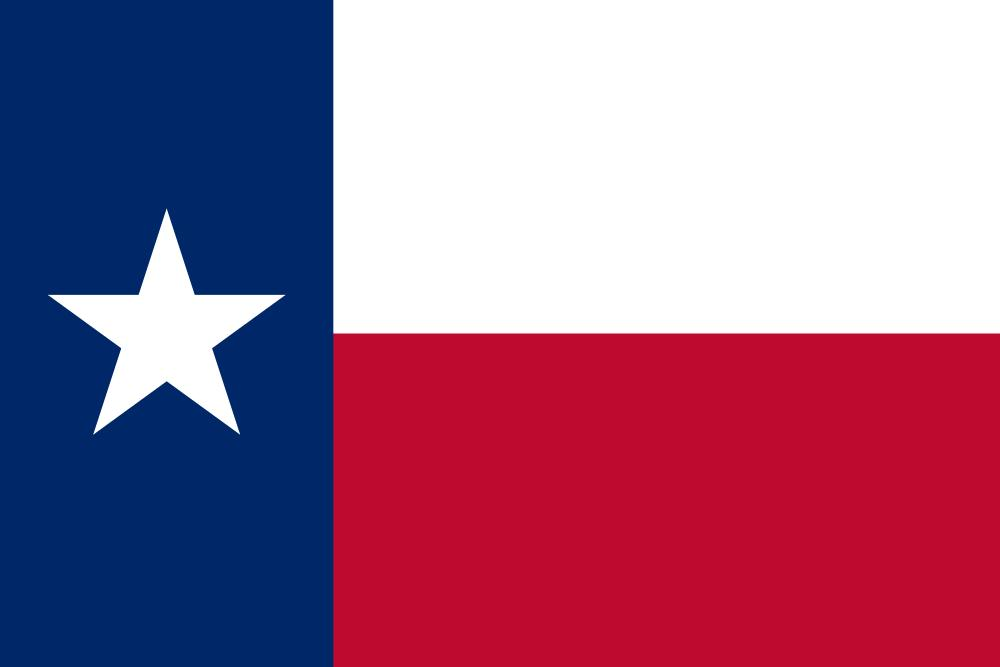

S. Lee Ward
About Me
Hello! My name is Lee Ward and I am from Western Texas in the U.S. I have traveled and lived around the world. I am currently studying Web Design with BYU Pathway Worldwide. I am also learning Python and C# Programming. I served in the Russia Yekaterinburg Mission from 2001-2003. I speak English, Russian, Spanish, French, Portuguese, Japanese, and Tagalog. I've lived in the US, Russia, the United Arab Emirates, and the Philippines. In the US, I have lived in Oregon, Utah, Tennessee, Maryland, Mississippi, Michigan, and Texas. I started my career as a nuclear engineer. Now, I work in management for regulatory compliance. I have a B.S. in Mathematics, an M.S. in Nuclear Engineering, and am working on a B.S. in Cyber Security and a B.S. in Software Development. I love programming and cyber security and look forward to transitioning to a career in tech in the future. I hope to specialize in quantum computing, if possible.
Texas, USA

Texas is the 2nd largest state in the U.S. It is a major producer of oil and beef. The state capital is Austin, which is a major tech hub.